Font Rendering
gsave newpath
509 711 moveto
203 711 lineto
167 657 127 607 87 569 curveto
78 583 58 611 45 624 curveto
106 677 166 756 201 839 curveto
262 821 lineto
254 801 244 783 233 763 curveto
509 763 lineto
509 711 lineto
closepath
389 633 moveto
332 611 lineto
324 633 306 664 288 687 curveto
345 706 lineto
361 684 381 653 389 633 curveto
closepath
769 503 moveto
769 564 lineto
247 564 lineto
247 503 lineto
769 503 lineto
closepath
769 397 moveto
769 458 lineto
247 458 lineto
247 397 lineto
769 397 lineto
closepath
769 288 moveto
769 352 lineto
247 352 lineto
247 288 lineto
769 288 lineto
closepath
646 150 moveto
646 242 lineto
385 242 lineto
385 176 lineto
385 168 385 159 384 150 curveto
646 150 lineto
closepath
952 765 moveto
952 712 lineto
776 712 lineto
800 689 826 658 839 636 curveto
785 610 lineto
774 633 748 666 725 690 curveto
773 712 lineto
624 712 lineto
599 673 570 637 539 610 curveto
837 610 lineto
837 242 lineto
713 242 lineto
713 150 lineto
944 150 lineto
944 94 lineto
713 94 lineto
713 -74 lineto
646 -74 lineto
646 94 lineto
371 94 lineto
348 31 287 -32 144 -81 curveto
135 -67 116 -44 102 -32 curveto
218 3 273 49 298 94 curveto
59 94 lineto
59 150 lineto
316 150 lineto
318 160 318 169 318 177 curveto
318 242 lineto
181 242 lineto
181 610 lineto
537 610 lineto
524 620 496 636 481 643 curveto
540 691 592 763 620 839 curveto
682 825 lineto
675 804 666 785 656 765 curveto
952 765 lineto
closepath
fill grestore
gsave newpath
292 31 moveto
767 31 lineto
841 31 857 68 864 236 curveto
883 226 912 216 932 212 curveto
919 9 883 -37 762 -37 curveto
301 -37 lineto
161 -37 93 13 93 96 curveto
93 167 120 243 648 684 curveto
98 684 lineto
98 752 lineto
741 752 lineto
756 757 lineto
803 724 lineto
800 720 795 717 790 714 curveto
198 227 164 154 164 101 curveto
164 53 217 31 292 31 curveto
closepath
fill grestore
Character
Character就是電腦符號。譯作「字元」或「字符」。
電腦符號都有編號。世界公定的編號方式是Unicode。例如第30399號是「算」，第9775號是「☯」。電腦符號包括了世界各國文字、數字、圖示、表情符號等等。
電腦符號必須編碼，節省儲存空間。Unicode有著UTF-8和UTF-16兩種主流的編碼方式。
字元編碼，是編碼理論的範疇。字元操作，是字串理論的範疇。字元顯示，是計算機繪圖的範疇，是我們現在要談的內容。
Font
Font就是文字的造型。譯作「字體」或「字型」。
從書寫的觀點：中文字體有楷書、行書、草書、隸書、篆書等五大類，有名的楷書如顏真卿、柳公權等等。字體是書法家發明的。
從電腦的觀點：繁體中文字型有標楷體、細明體、微軟正黑體等等。英文字型有Times New Roman、Verdana、Arial等等。字型是美術設計師和程式設計師發明的。
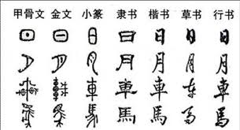

只要有文字的地方，通常都能更換字型，例如文字編輯器、瀏覽器、作業系統、命令提示字元。電腦可供使用的字型，主要是看你的電腦安裝了哪些字型。有專門製作字型、販售字型的公司，例如專精繁體中文字型的JustFont、文鼎、華康。亦有人號召製作字型，例如文泉驛。
電腦顯示字元，必須透過字型。每一套字型都只替一部分的字元設計造型，例如Times New Roman只設計了英文字母、拉丁字母、少量的特殊符號，例如微軟正黑體只設計了英文字母、中文字、少量的特殊符號。一套字型當中，沒有設計造型的字元，就無法顯示，或者是顯示問號、空白方格等等莫名其妙的符號。儘管現今沒有任何一套字型涵蓋Unicode規定的所有字元，不過其實也不需要一套萬能的字型。對於沒有設計造型的字元，作業系統將另尋其他字型。
字型由作業系統控管。想要讓視窗程式顯示特定字型，土法煉鋼的方式是Windows API，輕鬆寫意的方式是程式語言內建的函式庫。想要讓網頁顯示特定字型，利用CSS的font-family即可。
Glyph
接著到了本篇文章的主角「字形」。首先玩個小遊戲吧！拖曳控制點，按Enter評分。美感和眼力必須很傑出。設計師的日常。
「字形」就是單獨一個字元的形狀。由演算法自動調整形狀，或由文字設計師手動調整形狀。
Glyph的資料結構
共三種：點陣字dot-matrix、筆畫字stroke、輪廓字outline。
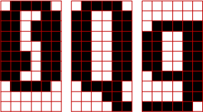
點陣字：用黑色方格（像素）拼成字形。
電腦已經淘汰點陣字型了，例如Fixedsys。然而有些字型為了支援極小尺寸，仍會搭配點陣字型，例如文泉驛點陣宋。
點陣字使用最多的地方不是電腦，而是電子辭典、大眾運輸的LCD跑馬燈、統一發票。
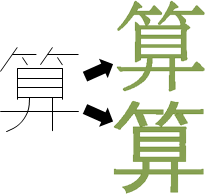
筆劃字：直覺的方式。特別適合漢字。
記錄起點座標、終點座標、寫法（永字八法：側勒努趯策掠啄磔）（英文字母筆劃剖析）、曲率參數、變換矩陣。最後以演算法加粗筆劃，生成字型。優點是容易創造新字型，缺點是美感不佳。累死工程師、悶死設計師。
可惜的是，我們無法獲得筆劃資料。中文筆畫資料，屬於商業機密，更有專利保護。大家不得其門而入。例如王漢宗字型侵權案，個人猜測是從神秘管道得到筆劃資料，再自創加粗筆劃的演算法。
可惜的是，我們無法得知筆劃加粗的演算法。即便是開源字型，也從未公開演算法。必須跟字型公司簽技術合作。
這多少阻礙了組字、造字、文字資料庫、筆劃檢索、手寫辨識的進展。
輪廓字：公定的方式。現今字型皆是輪廓字。
輪廓由許多線條組成，線條一律是「直線線段：兩個端點」和「Bézier Curve：兩個端點與兩個控制點」。最後以演算法填充輪廓內部，生成字型。
幸運的是，我們可以獲得輪廓資料。安裝免費開源的字形編輯軟體FontForge，下載免費開源的字型思源黑體、文泉驛正黑，將字形匯出成.eps或.svg檔案即得。上面的「算」就是這樣來的。
注意到，字型都有著作權，未經授權不可使用字型檔案裡面的數據，即使免費。讀者做實驗時，一定要記得選擇免費且開源的字型，以免觸法。
輪廓字的檔案格式主要有兩種：囊括所有格式的OpenType（.otf）、早期的TrueType（.ttc .ttf）。OpenType是當今主流，網路上有不少資訊。如果你有志鑽研字型渲染，可以自己寫程式存取OpenType檔案，也可以參考開源的字型渲染引擎FreeType。
em square：字形的編輯區域
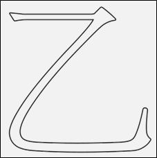
活字印刷當中，em是指鉛字寬度。電腦字型當中，em square是指字形的編輯區域。就這樣。
outlining：描繪輪廓
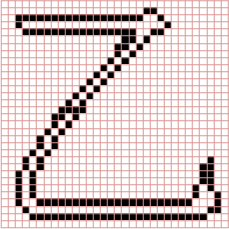
運用上個章節的繪製直線與繪製曲線演算法即可。
描繪輪廓目前沒有公定標準。即便是相同字型相同字形，在Firefox、Chrome、Windows、OS X的顯示結果通常略有不同。不同的字型渲染引擎，呈現不同結果。你也可以自己寫一個。
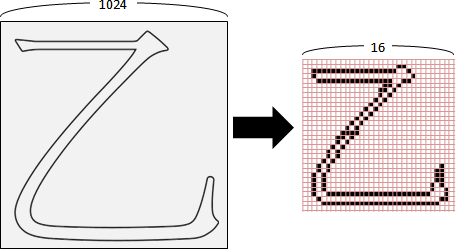
為了讓輪廓座標變成像素座標，這裡介紹一下pt和dpi。
電腦字型大小，單位是pt (PostScript point)，是長度單位。72pt = 1英吋，pt除以72得到英吋。電腦字型通常預設12pt。
長度變成像素數量，單位是dpi (dot per inch)，每英吋多少點（像素）。電腦螢幕通常是96dpi，實體印刷至少是300dpi。
比方說，12pt字型，96dpi解析度，一個字形的邊長含有12 / 72 * 96 = 16個像素。
假設em square的邊長是1024。輪廓座標(x,y)，等比例縮放得到像素座標(round(x/1024*16), round(y/1024*16))。
filling：填充輪廓
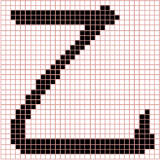
運用上個章節的Scanline Fill Algorithm。輪廓不能交叉重疊，以利判斷內外。
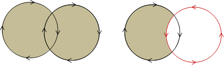
如果讓輪廓具有方向性，順時針為正，逆時針為負，則得以設計聯集與差集。
overlap removing：重疊的輪廓，簡化成一個輪廓
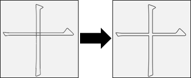
為了順利填充輪廓，凡是輪廓交叉重疊，就必須重新整合。
有兩種狀況：一個輪廓自身交叉、兩個輪廓互相重疊。
需要處理的事情：求交點、求聯集或差集、重新安排頂點順序。需要的演算法：線段交點、Bézier Curve交點、多邊形交集。不太容易實作，讀者可以挑戰看看。
字形編輯軟體有此功能，節省設計師的作業時間。
hinting / grid fitting：微調字形位置
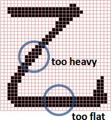
像素座標只能是整數。座標四捨五入變成整數，可能往左往下跑、可能往右往上跑，筆畫粗細有所改變。尤其是字形縮放大小，例如從12pt到14pt，問題更加嚴重。
像素大小固定。當字形縮小至非常小，例如6pt，所有筆劃通通黏結在一起。此時整個字形都得重新設計，甚至改成點陣字。
目前已經有演算法，可以自動微調字形位置。不過凡事總有例外，仍需設計師人工檢視、手動微調。各種常見縮放尺寸，都得一一檢視。中文數萬字，一字一字做，一日一日做，愚公移山、精衛填海！
anti-aliasing：微調字形邊緣的像素數值
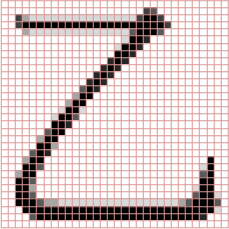
在字形邊緣設定漸層顏色，使得字形邊緣柔順、清晰。
像素整齊排列。對於一條斜線，黑白顯示器，無可避免地，一定有鋸齒；灰階顯示器、彩色顯示器，則可以微調鄰近像素數值，達到平滑效果。演算法共三種。

面積：像素視作正方形格子。如果佔據40%的面積，就將數值設定為40%，也就是255 - (255 * 40%) = 153。
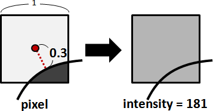
距離：像素到輪廓的最短距離，非常推薦的方式！把貝茲曲線轉換成多項式，再解方程式（求根）求得最短距離。也可以用分治法。
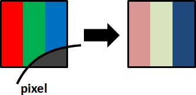
分割像素：彩色顯示器，一個像素由RGB三個元件組成，調整RGB亮度比重，強調邊緣。缺點是邊緣五顏六色，相當刺眼，不是每個人都喜歡。最有名的演算法是微軟的ClearType。
metrics：設定字形間距
http://www.freetype.org/freetype2/docs/glyphs/glyphs-3.html
字形的部分已經介紹完畢了，接下來是排版的部分。
FreeType的說明文件已經有精美圖片。這裡就不重畫了。
ligature / kerning：微調字形間距
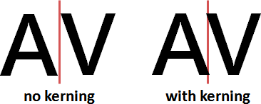
比方來說，AV合在一起時，視覺感受是留白太多，需要更緊密一點。AB、AD不需要更緊密，保持原本排版即可。
解法是事先設定特殊組合。OpenType支援此設定。屬於文字處理的範疇。
另外還有一種情況，出現於阿拉伯文、泰文等等。這些語言根據語意，銜接或斷開字形。
解法是剖析語意。OpenType沒有此設定，由排版引擎自行實作。屬於自然語言處理的範疇。
未涉及的主題
因為我沒有跟字型公司簽技術合作，所以知道的事情有限。
一、輪廓字的編輯介面。
二、輪廓字、筆劃字、點陣字之間的轉換。華康有個專利，演算法是迴歸。
三、拆字組字。簡化字型製作流程。
四、調字。根據環境、根據版面，自動調整字形。
五、手寫字形。工程師（詳細演算法）和設計師（詳細流程）有著不同的策略。
六、壓縮。減少字型檔案大小。例如Compact Table Format和MicroType Express。
七、列印文字。印表機韌體設計。
Font Design
這是設計師的專業。已有人寫書拍片，我就不班門弄斧了。
演算法生成的字形太過呆板（例如墨字的四個點如何點）。目前的作業流程是：先由工程師產生大致輪廓，再由設計師調整細節。
繁體中文的筆劃寫法，台灣政府有訂立標準。不過政府標準不見得是好看的，也不代表是正統的。
Typeface Design / Typography Design
也許可以看看spiro curve、文字雲、筆劃裝飾。
Math Rendering
畫數學式子與畫字形，原理相同，只是還要再解決一個問題：數學式子的資料結構為何？目前最流行的方式，是用純文字記錄一道算式，所採用的文法是TeX的語法。
讀者可以參考MathJax。
Web Rendering
https://en.wikipedia.org/wiki/Web_browser_engine


{kind=link}